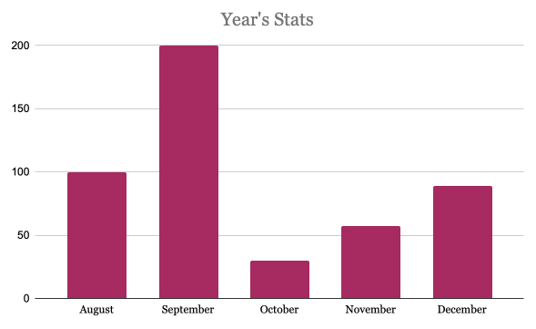
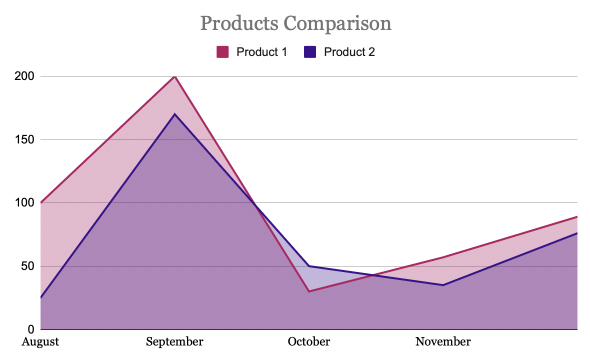

Typography
This section describes the fonts that we use in our dashboard, different typography elements, their sizing and styling.
Font Family
In our dashboard we use 2 Fonts - Inter and Aref Raqaa. The first one, being more strict and readable, is used in paragraphs and paragraphs. The latter one is used to display data in charts.
Type Scale
Below are presented type scales for all the headings and paragraphs that we use in the dashboard. All headings are used in order to highlight their sections, going from the highest importance to the lowest.
Heading One
46px Inter Bold
Heading Two
38px Inter Bold
Heading Three
30px Inter Bold
Heading Four
26px Inter Bold
Paragraph
20px Inter Regular
Chart Description
20px Aref Ruqaa Regular
Special Characters
Here is a list of special characters in both fonts that we use.
0123456789!@#$%^&*(){}”:;,.?/>
Inter Regular
0123456789!@#$%^&*(){}”:;,.?/>
Aref Ruqaa Regular
Color
This section illustrates the colors we use on our dashboard.
#Primary
Blue Gem
Hex-#3B118B
RGB-59,17,139
#Secondary
Red Violet
Hex-#B61661
RGB-182,22,97
#Tertiary
Strikemaster
Hex-#895179
RGB-137,81,121
#Tertiary
Snuff
Hex-#DFD7EF
RGB-223,215,239
#Tertiary
Prim
Hex-#F3E2EA
RGB-243,226,234
#Neutral (text)
Dark Grey
Hex-#171F27
RGB-59,17,139
#Neutral (background)
Alabaster
Hex-#FBFBFB
RGB-251,251,251
Page Layouts
This section describes the layouts for our dashboard.
Desktop Layout
On the left side we have a Navigation sidebar, which will have the links to different sections of the dashboard. On the right side we have our dashboard's content with data charts. It is a custom grid with multiple charts combined.
Mobile Layout
The dropdown menu would be located at the top and would open when clicked at the hamburger button. The dropdown will span all the height of the device.
Grid Sizes
Below are illustrated different break points for our dashboard. We have 2 main breakpoints at 800px for tablets and smaller laptops and at 400px for mobile devices. On the phones and small tablets the layout realigns to form one column with one chart per row. On the horizontal tablets (and big tablets in vertical mode) we use a 2 column grid with 2 big charts per column.
Data Visualization
This section illustrates different types of charts that we use in our dashboard
Bar Chart
We will utilize three types of Bar Charts in our dashboard (normal, stacked and horizontal). As bars’ colors we utilize our primary ones and for the chart’s description we use Aref Ruqaa font.
Normal Bar Chart
This bar chart is a multiple-value chart that can be displaying different metrics that compare over time like revenue comparison by month, or new subscribers by year.
Stacked Bar Chart
This stacked bar chart is a multiple-value chart that can be used to display comparison between different products or services over time.
Horizontal Bar Chart
This horizontal bar chart is a multiple-value chart that is used to display the same data as a normal bar chart, but in a little different format, with bars going from left to right instead of bottom to top.
Line Graph
We will utilize two types of Line Graphs in our dashboard (normal and stacked).
Normal Line Graph
This is a regular Line Graph that illustrates the trends over time for products or services and compares them at the same time.
Stacked Line Graph
This is a Stacked Line Graph. In this Graph our lines do not intersect and the lines reach a total of 100% of the axis range at each point.
Area Chart
We will utilize two types of Area Charts in our dashboard (normal and stacked).
Normal Area Chart
This is a Normal Area Chart. We use it with the same purpose as line-graph, however in this case the area is highlighted.
Stacked Area Chart
This is a Stacked Area Chart. The difference compared to regular is that there is no intersection between the areas, they stack on top of each other.
Pie Chart
This is a Pie Chart. It is used to display comparison between multiple categories to show how much each contributes to the total result. Here we use a wide-variety of our primary and secondary colors.
Donut Chart
This is a Donut Chart. It is used to display the same data as a pie chart but with a different styling.

Scattered Plot
This Scattered Plot is used to illustrate the general trend among many different categories of products.
Single Value Chart
These single value charts are designed to show one key metric and how it changed compared top some recent time.
Buttons
This section describes the various types and styles of buttons we will use in our dashboard. We have three main types of buttons: Primary, Secondary, and Tertiary. These buttons are used for differnt levels of functionality. We also chose corresponding colours and some fun hover effects to keep it simple yet elegant.
Button Examples
Footer
In our footer we decided to leave links to our company's social network accounts. We also have some legal information down there. There is no need to duplicate navigation, since it is on the sidebar and can easily be accessed.
Header
This section describes the look and layout for the header portion of our dashboard. We are keeping it simple and using our branding and colors to speak for themselves. We also will have a hamburger button on the right side of the header for mobile navigation.
Inputs
Below are the inputs we will be using. Text inputs, textareas and dropdown menus are utilized. Different color states of the text inputs are unfocused, focused, error and success.
Sidebar
This section shows how our sidebar is organized, and how the user can interact with the sidebar. The sidebar will contain all of the navigation links to move around the needed pages for the dashboard. The Sidebar link is an example of the active link, and we have an on hover element to the sidebar. Sidebar will span the whole height on the left side of the page and will occupy around 25% of the whole page width.
Modals
Modal windows can be used to show the user content whether it is a message, image, or a combination of the two of them in one modal. We utilize them to show anything that is more important than the rest of the screen. Modals are displayed in the center of the page and can be exited by clicking outside of the modal or by clicking on the X button.